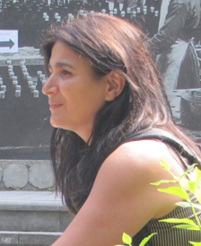

קורס בינה מלאכותית לאדריכלים
כלים לחשיבה מעודכנת בעידן השינוי.
המטרה
בנייה של כלים בינה מלאכותית אשר מסייעים לאדריכלים וללקוחותיהם לחשוב טוב יותר במהלך תהליך תכנוני. לא עוד טבלאות מסובכות וטופסים שמעייפים — אלא שיחות ברורות וחזון המומחש בעיניים.
הסיפור
למדתי ברומא, במילאנו ובוונציה, ועדיין אני מגלה את אשדוד מחדש בכל יום בתור אדריכלית העיר שלה.
הקולנוע וההדרכה בטיולים לימדו אותי שגם אדריכל וגם מדריך מבלים את חייהם בהסבר למישהו איפה הוא נמצא, ואני עדיין לא בטוחה אם זה מחמיא או מביך.
אז אני בונה כלים לקורס הזה בבינה מלאכותית, כי מי שכבר מטפל בתוכניות לא צריך עוד תוכנית, אלא כלי שעובד.
מפגש א: זכויות בנייה
מה בחלק הזה
אפליקציה אינטראקטיבית לביצוע מיפוי זכויות, בנייה של מודל וחלופות, ובדיקת התאמה. הממשק מפרק תב"ע למקורות, בונה מודל לכל חלופה, ובודק כל חלופה מול היזם ומול העירייה.
שלושת השלבים
- שלב 1 · מיפוי זכויות: קלט את מסמכי התב"ע, הצפה מושכלת של הנתונים, מקור ברור לכל מספר.
- שלב 2 · מודל וחלופות: בנייה של מודלים תלת-ממדיים לכל חלופה, שינוי משתנים (גובה קומה, צפיפות, שטחים), טבלאות השוואה.
- שלב 3 · בדיקת התאמה: רמזור ירוק/צהוב/אדום על כל קריטריון, ממשק אינטראקטיבי לשינוי הנתונים בזמן אמת.
נלמד · חמש שאלות עיקריות
- מה משנה במספר אחוזי הבנייה: תיקון דצמבר 2023 לתקנות חישוב השטחים — הבנה של האם הטבלה מציגה שטח כולל או פיצול.
- שטח מגרש, תכסית וקווי בניין: סטייה של עד 0.5% בין השייפ לטבלה נחשבת תקינה.
- קומות, גובה וזכויות מתחת לקרקע: מספר קומות מעל ומתחת לקרקע מופיע בהוראות, גובה נמדד לפי ההגדרה בתכנית.
- יחידות דיור ושימושים: מספר יח"ד מרבי וצפיפות בהוראות או בטבלה בלבד.
- בקרת עקביות: רכיבי השטח חייבים לסכום לסה"כ, אחוזים חייבים להתאים לשטחים.
נעשה · בנייה מעשית
להזין פרויקט אחד במלואו: זכויות בנייה, מודל תלת-ממדי לשלוש חלופות, בדיקת התאמה מול היזם והעירייה.
הצעד הבא
פתח את מפגש א בטלסקופ מלא כדי לעבוד עם הנתונים של התב"ע שלך.
מפגש ב: הצעות וניתוח
מה בחלק הזה
כשלוקחים את הזכויות ממפגש א ובונים עליהן הצעות משפחתיות וניתוח השפעות עירוניות. כל הצעה משקפת סטוריית משתמש שונה, ודוח ההשפעות חושף כל חיבור בין הבחירות שלך לשינויים בעיר.
שלושת השלבים
- משפחות הצעות: בנייה של משפחות הצעות שנשלפו מהזכויות בא, כל משפחה על בסיס סטוריית משתמש שונה.
- ניתוח השפעות: תוכנית פנימית מתופסת בעיניים, חשופות ההשפעות על הסביבה הקרובה, חישובי צפיפות ותפוסה.
- שיתוף עם בעלי עניין: הצעת גרסאות לדוגמה ללקוח, עיר, רשות תכנון — כל גרסה מהודרת לקהל שלה.
נלמד · שתי רמות של ניתוח
רמה ראשונה: הבנת איך הצעה משפיעה על יעדי היזם (מכירות, מחיר, עירוניות). רמה שנייה: ההשפעות על הרחוב, האוויר, הישימות של המטבח, המים.
נעשה · הדוח המיוחד
הכנת דוח השוואה בין שלוש הצעות, לכל אחת יתרון וחיסרון, המלצה מנומקת, ודוח נפרד לכל גרם מעניין (יזם, עיר, רשות).
סדר בבאלגן: ארגון בעיות מורכבות
מה בחלק הזה
כשהמטלה גדולה מדי, הנתונים מפוזרים, או שיש הרבה חלופות. איך לארגן את התהליך לפני שממשיכים? שלוש סיבות עיקריות להכאוס: נתונים מפוזרים, שאלות רבות בבת אחת, אפיון לא ברור.
ששת הכלים
- זיהוי הבעיה: איזה מהשלוש הם במקרה שלך?
- פתרת חוט אחד: בדיקת נתונים, בחירת שאלה אחת, השגת הסכמה על קריטריונים.
- ניהול חלופות: טבלה ודרך לרישום גרסאות, מה משתנה ומה התוצאה.
- רישום ממצאים: איך תעדים כדי שאחרים יבינו — תוצאה, חישוב, ערעור, צילום.
- דיווח תוצאות: שלוש דרכים לפי הקהל — לעצמך, להצוות, ללקוח.
- רשימת בדיקה: שש שאלות לפני ההמשך לשלב הבא.
נלמד · התרגיל הבסיסי
קח משימה שמנת כדלקדת בחודש שעבר. חלץ מתוכה שלוש משפחות בעיות: איזה נתונים חסרים, איזה שאלות עומדות, איזה הנחות צריך להסדיר. אל תכתוב פתרון עדיין.
נעשה · בניית מערכת עבודה
אחרי שזיהית את הבעיה, בנה לעצמך טבלה עם שלוש שורות: שאלה, מצב נוכחי, צעד הבא. הדבק אותה בדיסקוד או בתוך המסמך שלך. כשיש לך שלוש ברורות, אתה כבר לא בבאלגן.